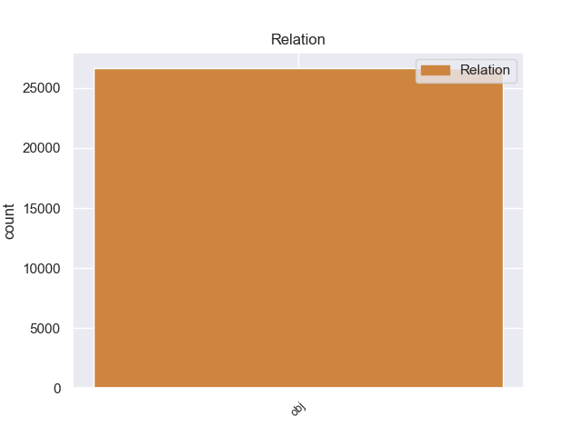
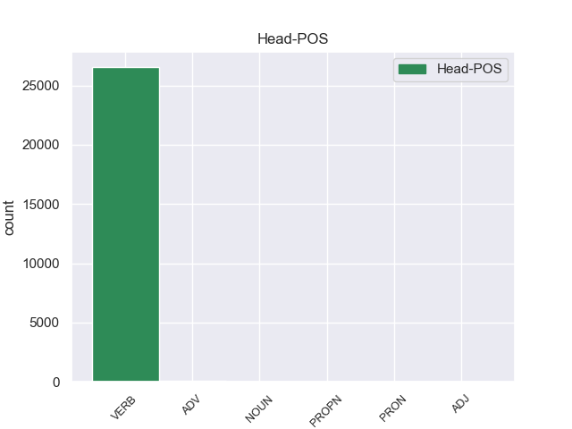
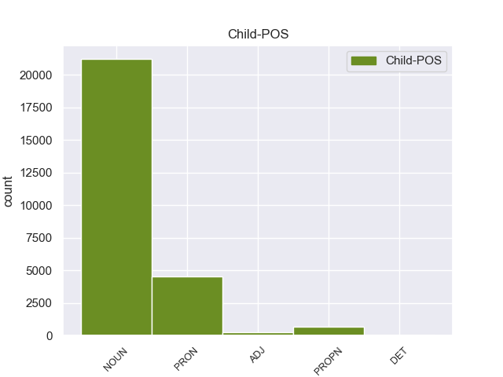

Distribution of features within this leaf



Morphosyntax Rules sorted by frequency.
- When the dependent token is the object(obj) of the head token, the Case needs to be Acc.
1 - _ _ _ _ 0 _ _ _
2 Я _ _ _ _ 0 _ _ _
3 обязательно _ _ _ _ 0 _ _ _
4 ее она PRON _ Case=Acc|Gender=Fem|Number=Sing|Person=3 5 obj 5:obj _
5 расчищу расчистить VERB _ Aspect=Perf|Mood=Ind|Number=Sing|Person=1|Tense=Fut|VerbForm=Fin|Voice=Act 0 _ _ _
6 . _ _ _ _ 0 _ _ _
non-conforming Examples:
1 Она _ _ _ _ 0 _ _ _
2 изживет изжить VERB _ Aspect=Perf|Mood=Ind|Number=Sing|Person=3|Tense=Fut|VerbForm=Fin|Voice=Act 0 _ _ _
3 сама сам ADJ _ Case=Nom|Degree=Pos|Gender=Fem|Number=Sing 2 obj 2:obj _
4 себя _ _ _ _ 0 _ _ _
5 . _ _ _ _ 0 _ _ _
1 В _ _ _ _ 0 _ _ _
2 вагоне _ _ _ _ 0 _ _ _
3 электрички _ _ _ _ 0 _ _ _
4 было _ _ _ _ 0 _ _ _
5 тесно _ _ _ _ 0 _ _ _
6 от _ _ _ _ 0 _ _ _
7 рюкзаков _ _ _ _ 0 _ _ _
8 и _ _ _ _ 0 _ _ _
9 лыж _ _ _ _ 0 _ _ _
10 и _ _ _ _ 0 _ _ _
11 шумно _ _ _ _ 0 _ _ _
12 : _ _ _ _ 0 _ _ _
13 все _ _ _ _ 0 _ _ _
14 кричали _ _ _ _ 0 _ _ _
15 , _ _ _ _ 0 _ _ _
16 звали звать VERB _ Aspect=Imp|Mood=Ind|Number=Plur|Tense=Past|VerbForm=Fin|Voice=Act 0 _ _ _
17 друг друг NOUN _ Animacy=Anim|Case=Nom|Gender=Masc|Number=Sing 16 obj 16:obj _
18 друга _ _ _ _ 0 _ _ _
19 , _ _ _ _ 0 _ _ _
20 с _ _ _ _ 0 _ _ _
21 шумом _ _ _ _ 0 _ _ _
22 занимали _ _ _ _ 0 _ _ _
23 места _ _ _ _ 0 _ _ _
24 , _ _ _ _ 0 _ _ _
25 стучали _ _ _ _ 0 _ _ _
26 лыжами _ _ _ _ 0 _ _ _
27 . _ _ _ _ 0 _ _ _
1 Она _ _ _ _ 0 _ _ _
2 открывала _ _ _ _ 0 _ _ _
3 глаза _ _ _ _ 0 _ _ _
4 , _ _ _ _ 0 _ _ _
5 видела _ _ _ _ 0 _ _ _
6 в _ _ _ _ 0 _ _ _
7 темноте _ _ _ _ 0 _ _ _
8 дощатый _ _ _ _ 0 _ _ _
9 потолок _ _ _ _ 0 _ _ _
10 , _ _ _ _ 0 _ _ _
11 видела _ _ _ _ 0 _ _ _
12 разгорающееся _ _ _ _ 0 _ _ _
13 пламя _ _ _ _ 0 _ _ _
14 в _ _ _ _ 0 _ _ _
15 запотевшем _ _ _ _ 0 _ _ _
16 стекле _ _ _ _ 0 _ _ _
17 керосиновой _ _ _ _ 0 _ _ _
18 лампочки _ _ _ _ 0 _ _ _
19 , _ _ _ _ 0 _ _ _
20 зажмуривалась _ _ _ _ 0 _ _ _
21 - _ _ _ _ 0 _ _ _
22 и _ _ _ _ 0 _ _ _
23 сразу _ _ _ _ 0 _ _ _
24 начинали _ _ _ _ 0 _ _ _
25 плавать _ _ _ _ 0 _ _ _
26 , _ _ _ _ 0 _ _ _
27 сменять сменять VERB _ Aspect=Imp|VerbForm=Inf|Voice=Act 0 _ _ _
28 друг друг NOUN _ Animacy=Anim|Case=Nom|Gender=Masc|Number=Sing 27 obj 27:obj _
29 друга _ _ _ _ 0 _ _ _
30 желто _ _ _ _ 0 _ _ _
31 - _ _ _ _ 0 _ _ _
32 зеленое _ _ _ _ 0 _ _ _
33 , _ _ _ _ 0 _ _ _
34 белое _ _ _ _ 0 _ _ _
35 , _ _ _ _ 0 _ _ _
36 голубое _ _ _ _ 0 _ _ _
37 , _ _ _ _ 0 _ _ _
38 алое _ _ _ _ 0 _ _ _
39 - _ _ _ _ 0 _ _ _
40 все _ _ _ _ 0 _ _ _
41 цвета _ _ _ _ 0 _ _ _
42 , _ _ _ _ 0 _ _ _
43 на _ _ _ _ 0 _ _ _
44 которые _ _ _ _ 0 _ _ _
45 нагляделась _ _ _ _ 0 _ _ _
46 она _ _ _ _ 0 _ _ _
47 за _ _ _ _ 0 _ _ _
48 день _ _ _ _ 0 _ _ _
49 . _ _ _ _ 0 _ _ _
1 По _ _ _ _ 0 _ _ _
2 словам _ _ _ _ 0 _ _ _
3 Путина _ _ _ _ 0 _ _ _
4 , _ _ _ _ 0 _ _ _
5 процесс _ _ _ _ 0 _ _ _
6 получения _ _ _ _ 0 _ _ _
7 гражданства _ _ _ _ 0 _ _ _
8 должен _ _ _ _ 0 _ _ _
9 стать _ _ _ _ 0 _ _ _
10 проще _ _ _ _ 0 _ _ _
11 для _ _ _ _ 0 _ _ _
12 жителей _ _ _ _ 0 _ _ _
13 ближнего _ _ _ _ 0 _ _ _
14 зарубежья _ _ _ _ 0 _ _ _
15 - _ _ _ _ 0 _ _ _
16 - _ _ _ _ 0 _ _ _
17 " _ _ _ _ 0 _ _ _
18 тех _ _ _ _ 0 _ _ _
19 , _ _ _ _ 0 _ _ _
20 кто _ _ _ _ 0 _ _ _
21 близок _ _ _ _ 0 _ _ _
22 нам _ _ _ _ 0 _ _ _
23 и _ _ _ _ 0 _ _ _
24 с _ _ _ _ 0 _ _ _
25 кем _ _ _ _ 0 _ _ _
26 мы _ _ _ _ 0 _ _ _
27 хорошо _ _ _ _ 0 _ _ _
28 понимаем понимать VERB _ Aspect=Imp|Mood=Ind|Number=Plur|Person=1|Tense=Pres|VerbForm=Fin|Voice=Act 0 _ _ _
29 друг друг NOUN _ Animacy=Anim|Case=Nom|Gender=Masc|Number=Sing 28 obj 28:obj _
30 друга _ _ _ _ 0 _ _ _
31 ; _ _ _ _ 0 _ _ _
32 с _ _ _ _ 0 _ _ _
33 кем _ _ _ _ 0 _ _ _
34 говорим _ _ _ _ 0 _ _ _
35 на _ _ _ _ 0 _ _ _
36 одном _ _ _ _ 0 _ _ _
37 языке _ _ _ _ 0 _ _ _
38 " _ _ _ _ 0 _ _ _
39 . _ _ _ _ 0 _ _ _
1 Разбили _ _ _ _ 0 _ _ _
2 очки _ _ _ _ 0 _ _ _
3 , _ _ _ _ 0 _ _ _
4 порвали _ _ _ _ 0 _ _ _
5 подтяжки _ _ _ _ 0 _ _ _
6 , _ _ _ _ 0 _ _ _
7 отмутузили мутузить VERB _ Aspect=Perf|Mood=Ind|Number=Plur|Tense=Past|VerbForm=Fin|Voice=Act 0 _ _ _
8 друг друг NOUN _ Animacy=Anim|Case=Nom|Gender=Masc|Number=Sing 7 obj 7:obj _
9 друга _ _ _ _ 0 _ _ _
10 , _ _ _ _ 0 _ _ _
11 запыхались _ _ _ _ 0 _ _ _
12 , _ _ _ _ 0 _ _ _
13 присели _ _ _ _ 0 _ _ _
14 со _ _ _ _ 0 _ _ _
15 стаканом _ _ _ _ 0 _ _ _
16 на _ _ _ _ 0 _ _ _
17 диван _ _ _ _ 0 _ _ _
18 , _ _ _ _ 0 _ _ _
19 обнялись _ _ _ _ 0 _ _ _
20 : _ _ _ _ 0 _ _ _
21 " _ _ _ _ 0 _ _ _
22 Давай _ _ _ _ 0 _ _ _
23 , _ _ _ _ 0 _ _ _
24 брат _ _ _ _ 0 _ _ _
25 , _ _ _ _ 0 _ _ _
25.1 _ _ _ _ _ 0 _ _ _
26 пополам _ _ _ _ 0 _ _ _
27 ! _ _ _ _ 0 _ _ _
28 " _ _ _ _ 0 _ _ _